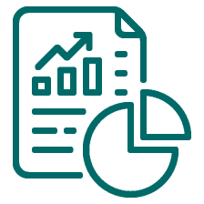

<app-toolbar>
  <div class="container mt-4">
    <div class="title">
      Reportes
    </div>
    <div class="subtitle">Reporte por categoria</div>
    <div class="text">
      Aquí puedes ver cómo han ido tus alarmas completadas, ya sea para cosas personales, trabajo o incluso para
      recrearte un poco. Con estos datos, puedes tener una idea de dónde has estado poniendo tu atención últimamente.
    </div>
    <div class="row">
      <div class="col-md-8">
        <canvas baseChart [data]="barChartData" [options]="barChartOptions" [type]="barChartType"
          class="chart"></canvas>
      </div>
      <div class="col-md-4">
        <canvas baseChart [data]="pieChartData" [type]="pieChartType" [options]="pieChartOptions"
          class="chart"></canvas>
      </div>
    </div>
    <div class="subtitle">Reporte alarmas completadas</div>
    <div class="text">
      Aquí está tu propio resumen de las alarmas que has completado. Es como tu diario de logros, ¡pero con un toque de
      productividad! Puedes ver cuántas cosas has logrado en diferentes áreas de tu vida, ya sea en tu tiempo libre, en
      el trabajo o en tus asuntos personales. ¡Sigue así y celebra cada victoria!.
    </div>
    <div class="row">
      <div class="col-md-8">
        <canvas baseChart [data]="lineChartData" [options]="lineChartOptions" [type]="lineChartType"
          class="chart"></canvas>
      </div>
      <div class="col-md-4">
        <canvas baseChart [data]="barChartData2" [options]="barChartOptions2" [type]="barChartType"
          class="chart"></canvas>
      </div>
    </div>
  </div>
</app-toolbar>
